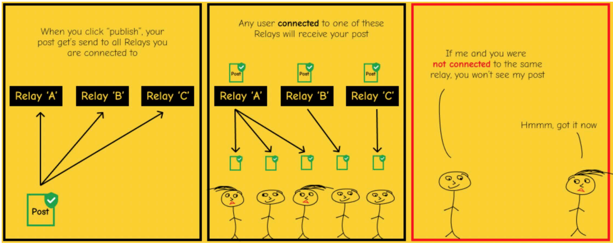

The Simplest Bitcoin Book Ever Written
HOW DOES
NOSTR WORK?
Nostr has two parts:
Clients and Relays.
A CLIENT is an INTERFACE
(app or website) that is run on the nostr protocol.
It is where you see the notes
that you and the people you follow post (in the same way that
twitter is an interface where you post and read notes by others,
except twitter is centralized & it censors posts.)
A RELAY is a SERVER and a DATABASE.
Anyone can run a relay, which is what makes nostr decentralized.
It is where your notes are sent, stored and retrieved from
by clients.
There are many relays and you can choose which ones to connect
to. Some are free and some are paid.
When you post a message, it is broadcast to the relays you are
connected to.
The clients query the relays they are connected to, and then
they populate the messages being hosted by those relays.

~ @BTCillustrated